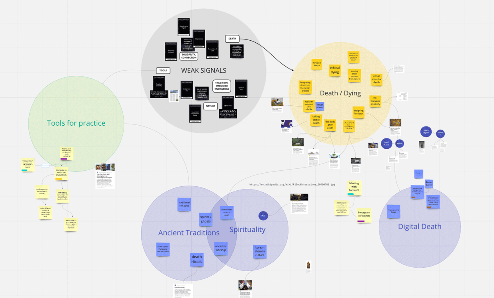
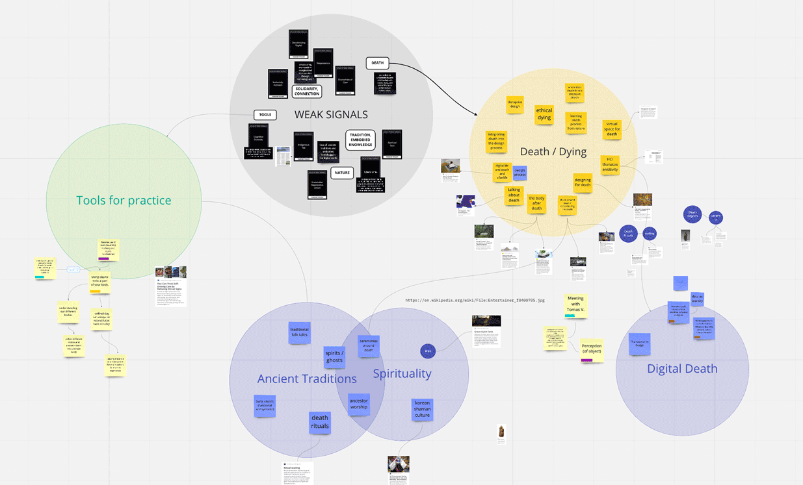

🗓 11 Jaunary 2022
Transdisciplinary approach: By using knowledge and interest across different fields from biology to artificial intelligence, I am building a more holistic approach to design thinking and process.
Beyond human-centered design: The value in recognizing other agents as a part of the design process effects and putting myself directly into the design and research process to gain first person insight. Understanding a designer’s role beyond that of a problem-solver, and the world full of problems that need solving.
Asset Framing / Solidarity > Charity: The way we frame our objectives from the start is important because it determines the attitude with which we approach our research and design. If we start with deficit framing and the failings of a community or an area of interest, we’ve already adapted a problem-solving mindset. Instead, if we start by framing the topic of community assets; we are able to work from a place of solidarity.
During the first term, I joined the MetaHuman group, with an interest to dive deeper into technology and social impact and investigate the ways humans coexist, co-create, and co-evolve with technology and the digital world. I want to continue working within the field of social design and find ways to explore social inequalities (personal to communal) that are tied to technology in some way. I believe that inclusivity and diversity in technology and design are more important now than ever, as technologies continue to grow and we continue to rely on them to operate in our daily lives.
I also became interested in working with research and design practices such as research through design and speculative design. I was drawn to these practices because I want to explore alternative roles for design other than problem-solving, and using design to generate new knowledge (research) and using design to ask questions about the future (speculation) appeal to me as both important and intriguing roles for design.
For my first intervention,

🗓 25 Jaunary 2022

Reframing through Reflection
To start, I want to highlight key approaches and learnings I am interested in bringing with me moving into the next few months of the program.Transdisciplinary approach: By using knowledge and interest across different fields from biology to artificial intelligence, I am building a more holistic approach to design thinking and process.
Beyond human-centered design: The value in recognizing other agents as a part of the design process effects and putting myself directly into the design and research process to gain first person insight. Understanding a designer’s role beyond that of a problem-solver, and the world full of problems that need solving.
Asset Framing / Solidarity > Charity: The way we frame our objectives from the start is important because it determines the attitude with which we approach our research and design. If we start with deficit framing and the failings of a community or an area of interest, we’ve already adapted a problem-solving mindset. Instead, if we start by framing the topic of community assets; we are able to work from a place of solidarity.
During the first term, I joined the MetaHuman group, with an interest to dive deeper into technology and social impact and investigate the ways humans coexist, co-create, and co-evolve with technology and the digital world. I want to continue working within the field of social design and find ways to explore social inequalities (personal to communal) that are tied to technology in some way. I believe that inclusivity and diversity in technology and design are more important now than ever, as technologies continue to grow and we continue to rely on them to operate in our daily lives.
I also became interested in working with research and design practices such as research through design and speculative design. I was drawn to these practices because I want to explore alternative roles for design other than problem-solving, and using design to generate new knowledge (research) and using design to ask questions about the future (speculation) appeal to me as both important and intriguing roles for design.
For my first intervention,

Reflexion as a design tool
- Ask why? (5 why’s)
- Look for differences with past actions
- Analyse critical events
- What if? (Look for alternatives)
- Compare yourself with others
- Group discussion and dialogues
🗓 25 Jaunary 2022